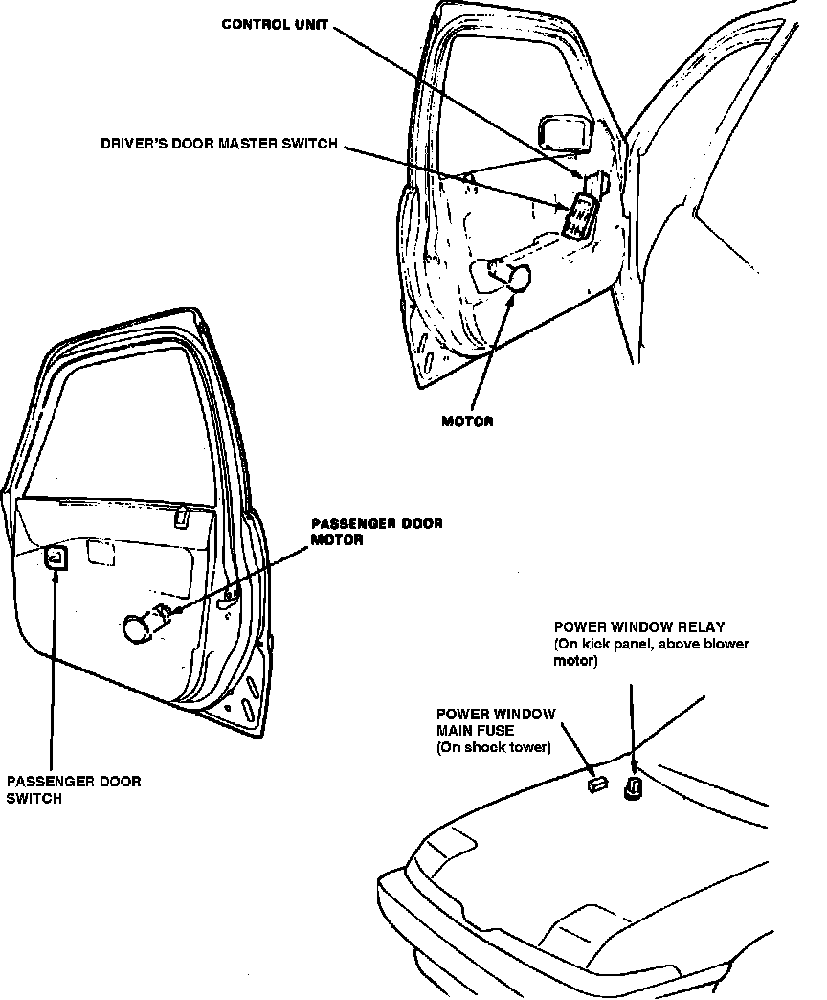

Operation CHARM
: Car repair manuals for everyone.
Home
>>
Acura
>>
1988
>>
Integra L4-1590cc 1.6L DOHC FI
>>
Repair and Diagnosis
>>
Maintenance
>>
Fuses and Circuit Breakers
>>
Fuse
>>
Locations
Fuse: Locations
Power Window Components.:

On Shock Tower
Applicable to: 1987 Integra